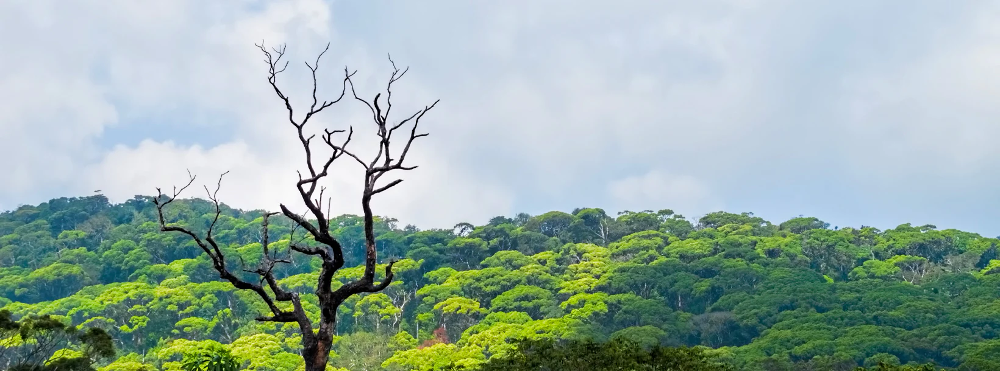
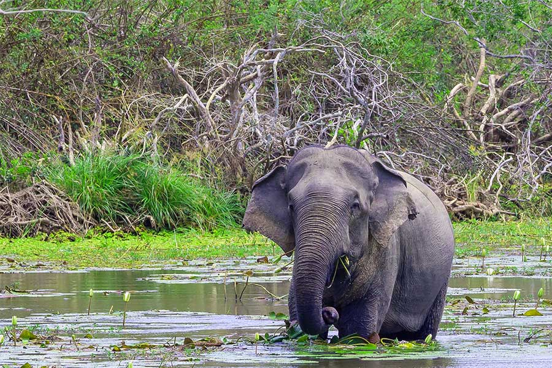
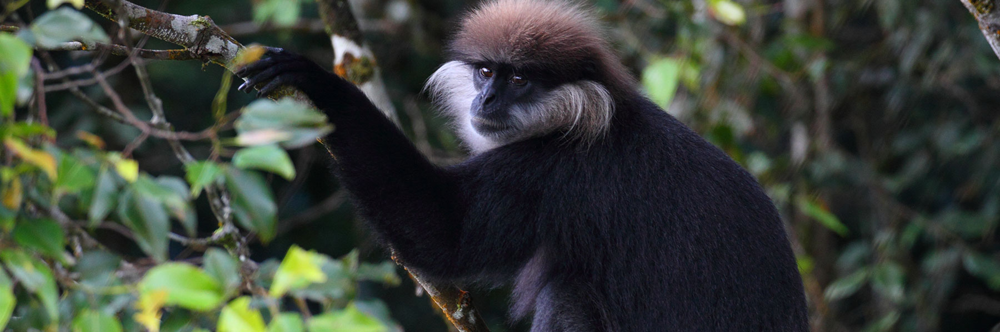
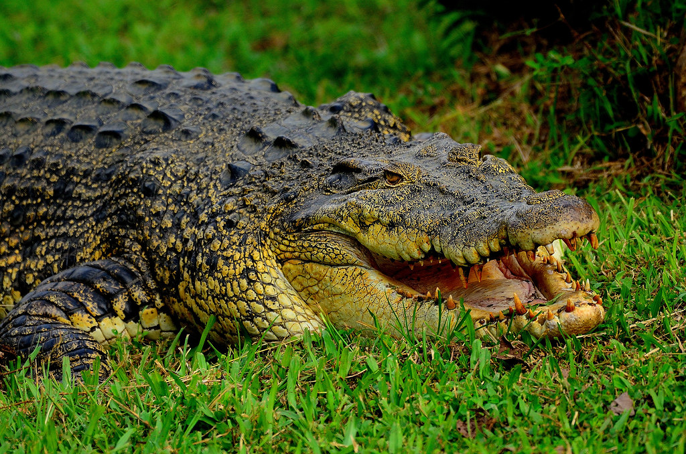
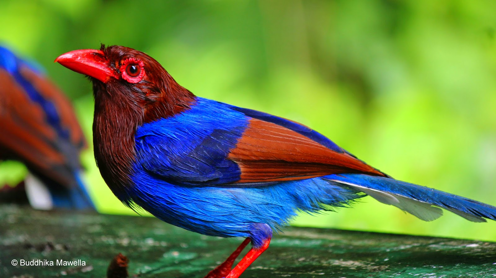

Different Wild Life Locations In Sri Lanka
Sinharaja Forest
Nestled in the verdant hills of Sri Lanka's southern region, Sinharaja Forest Reserve encompasses the last extensive tract of unbroken, primary tropical rainforest in the country. Gazetted as a UNESCO World Heritage Site and Biosphere Reserve, this unique ecosystem shelters staggering biodiversity within its dense tangle of vegetation. The towering trees, festooned in vines and epiphytes, echo with birdsong as endemic species like Sri Lanka blue magpies flit through the canopy alongside more widespread jungle fowl and drongos. Rare serpent eagles may also sight their slippery prey from lofty perches. Sinharaja’s elephants tread ancient paths long familiar under their sturdy feet, while leopards haunt the shadowy brush and elusive rusty-spotted cats stalk past humming cicadas. The reserve protects over 50% of the country’s endemic species of mammals, butterflies, insects, fish, and plants. Its 212 woody plant species per hectare far exceeds comparable rainforest diversity. Botanists continue identifying new endemic plants within its shadowed recesses, like the recent discovery of a striking new ginger species. From sparkling mountain rivulets winding through gnarled kitul palm groves, to thick tendrils of purple welpendela draping the stout boles of satinwood trees, Sinharaja's ecosystems teem with indigenous character from ridge to valley. However, this ecological profusion remains vulnerable to encroaching settlement, illegal logging, pollution, and the greater threat of climate shifts. Careful management combining preservation, research, reforestation, and environmental education offers hope for Sinharaja’s future as home for its wild denizens great and small.
Kumana National Park
Kumana National Park, situated in the southeastern corner of Sri Lanka, unfolds as a sprawling natural treasure spanning approximately 35,664 hectares. This diverse landscape encompasses dry grasslands, mangrove swamps, and scenic lagoons, creating a haven for a rich tapestry of flora and fauna. Established initially as a bird sanctuary in 1938, it earned national park status in 2006, contributing significantly to the ecological diversity of the Yala-Kumana complex. The park's foremost allure lies in its recognition as a globally significant bird sanctuary. Boasting over 200 bird species, including captivating migratory birds like the elegant Greater Flamingo, Eurasian Spoonbill, and Black-capped Kingfisher, Kumana is a paradise for avid birdwatchers. The peak season for bird migration from April to July transforms the park into a vibrant aviary, offering visitors an unparalleled spectacle of avian diversity. While renowned for its avian inhabitants, Kumana is also a habitat for various terrestrial species. Leopards and elephants roam freely, adding an element of excitement to wildlife encounters. The park's waterholes and lagoons, set against picturesque landscapes, create ideal settings for observing wildlife and capturing breathtaking photographs. The mangrove ecosystems along Kumana's eastern boundary are of particular ecological importance, serving as a breeding ground for marine life and contributing to the overall environmental balance. The park's diverse flora, including dry grasslands, scrublands, and patches of dense forest, provides habitat and sustenance for its varied wildlife. Conservation efforts are integral to Kumana National Park, as it remains a protected area dedicated to preserving its unique biodiversity. Eco-friendly and responsible tourism practices are encouraged, with guided safaris providing visitors an opportunity to explore the park while minimizing their impact on the environment. In essence, Kumana National Park beckons nature enthusiasts and wildlife lovers with its captivating blend of avian wonders, scenic landscapes, and a commitment to conservation. Whether embarking on a birdwatching adventure or encountering terrestrial wildlife, Kumana offers a holistic and enriching experience for those seeking the beauty of Sri Lanka's natural heritage.
Animals in Sri Lanka
Wildlife Summary
| Park | Animal | Facts | Image |
|---|---|---|---|
| Kumana | Sambar deer | The Sambar Deer, the largest deer in Asia, is found in South Asia, including Sri Lanka. With a shaggy brown coat, they adapt to various habitats, primarily nocturnal and herbivorous. Solitary or in small groups, they play a crucial role in ecosystems as prey for predators and seed dispersers, contributing to biodiversity. |  |
| Sinharaja | Purple-faced Leaf Monkey | The Purple-faced Langur, endemic to Sri Lanka, resides in Sinharaja Forest. Recognizable by a purple hue on their faces, these arboreal primates are endangered due to habitat loss. Living in social troops, they have an herbivorous diet. Conservation efforts in Sinharaja focus on protecting their habitat. Visitors can witness these unique primates through responsible eco-tourism in the lush rainforest. |  |
| kumana | Mugger Crocodile | In Kumana National Park, the Mugger Crocodile (Crocodylus palustris) is a notable inhabitant. This medium-sized crocodile species thrives in the park's freshwater habitats, including lakes and water bodies. Recognizable by its broad snout and rough appearance, the mugger crocodile is adept at tolerating brackish water. In Kumana, these crocodiles primarily prey on fish and small mammals, contributing to the park's diverse aquatic ecosystem. Visitors to Kumana may encounter mugger crocodiles near water sources, witnessing their crucial role in maintaining the ecological balance of the park's wetland habitats. |  | Sinharaja | Sri lankan blue Magpie | The Sri Lankan Blue Magpie, exclusive to the island, graces the Sinharaja Forest with its vibrant blue and white plumage. Inhabiting the canopy, these social birds emit melodious calls, contributing to the rainforest's lively atmosphere. Beyond their aesthetic appeal, they play a crucial role as seed dispersers, aiding in the forest's regeneration. Classified as near-threatened due to habitat concerns, conservation efforts in Sinharaja aim to safeguard both the Sri Lankan Blue Magpie and the diverse ecosystem it signifies. |  |
| Data Source: Wildlife Department Survey 2022 | |||